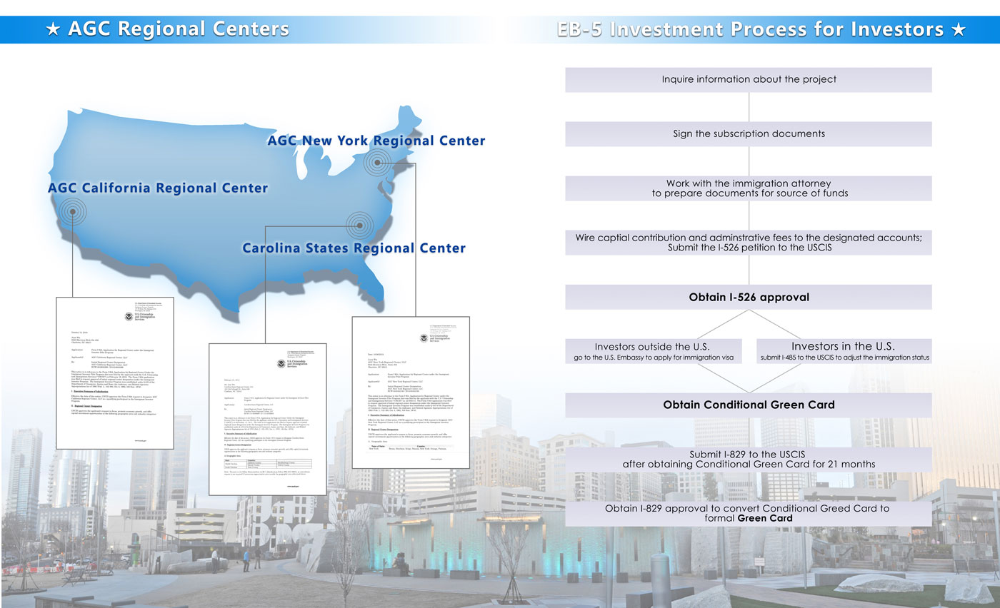
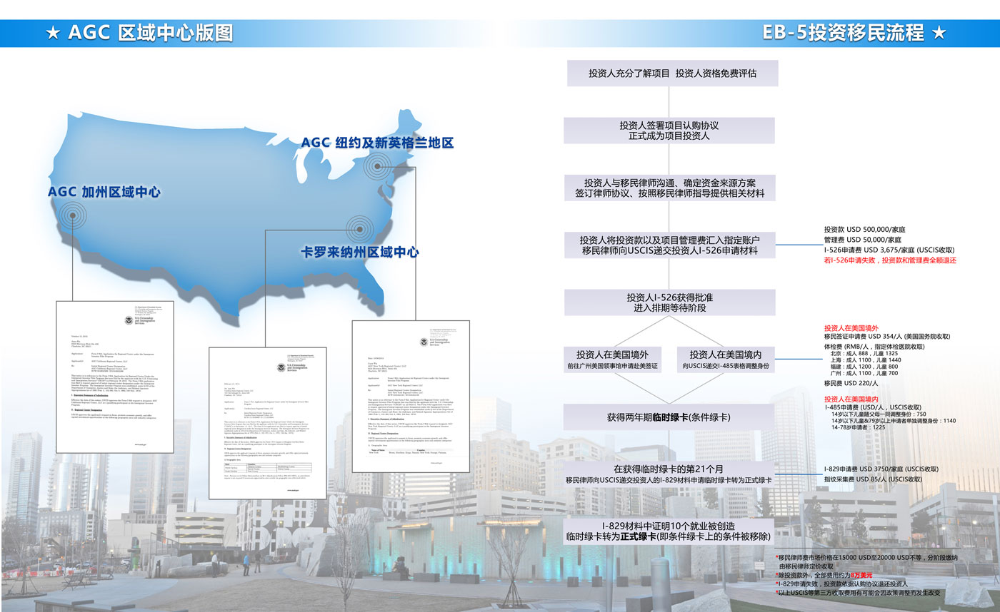

EB-5 Investment Immigration 美国EB-5投资移民
AGC Regional Centers include multiple regional centers across the United States. All regional centers are subsidiaries of Panorama Holdings, a private company specializing in real estate development, finance, investment, consultation and EB-5 services.
AGC California Regional Center, AGC New York Regional Center and Carolina States Regional Center have been approved by the U.S. Citizenship and Immigration Services (USCIS) to develop, finance and manage investment projects under the EB-5 program. While creating jobs and boosting local economic development through all types of projects, AGC Regional Centers also facilitate investors to obtain permanent residency, increase return of investment and lower risk of investment.
AGC区域中心旗下包含多家区域中心，这些区域中心全部隶属于磐远控股——一家以房地产开发、金融、投资、咨询以及EB5投资移民为主业的公司。
AGC加州区域中心，AGC纽约区域中心以及卡罗来纳州区域中心全部经由美国移民局批准，专业从事和美国移民法规定的EB-5投资移民项目的开发、融资和管理。在创造就业机会和促进美国地区经济增长的同时，旨在为外籍EB-5投资人获得美国永居身份（绿卡），创造投资利润并降低投资风险。
Credential- All AGC Regional Centers are officially approved and recognized by USCIS. They have also been in compliance with all USCIS requirements since approval.
Channels-AGC Regional Centers have formed unique channels to have exclusive access to a significant amount of high-net-worth investors from China and other parts of the world.
Capabilities –AGC Regional Centers have a superior management team and a first-class line of service providers to facilitate the entire investment process.
官方授权——AGC区域中心旗下的全部区域中心均由美国移民局官方批准授权成立。在各家区域中心经营过程中，均严格按照美国移民局相关法案规定，合规经营。
多重渠道——AGC区域中心有多支专属渠道，与中国籍和其它国籍高净值投资者互通有无。
金牌团队——AGC区域中心由精英管理团队和一流咨询团队打造，协力把关项目投资的各个环节。
AGC Regional Centers value INTEGRITY, INTELLIGENCE, and LONG-TERM RELATIONSHIPS.
INTEGRITY- We have zero tolerance for any unethical decisions in the project development and promotion process. We understand it is a significant decision to invest in a foreign country to obtain permanent residency. We vow to keep the approval of the permanent residency and the safety of the investment capital as our top priorities. Meanwhile, we believe in fair dealing for all constituents in any investment opportunity.
INTELLIGENCE- We have a team of elite members that would not settle for the second best quality of services. We choose the most superior professional services during the process in order to make the most intelligent decisions for project selection, development, and management.
LONG-TERM RELATIONSHIPS- We appreciate the opportunities to work with the investors and other constituents in every project. We would like to maintain the relationships in the long run. We will continue to seek excellent investment opportunities to build partnerships.
AGC区域中心将诚信、专业以及长期合作作为经营核心价值观。
诚信——我们深深了解选择移民是一项非常重大的决定。我们的首要任务是确保您获得美国绿卡以及最大程度上保障您的资金安全。我们秉承客户即是家人的原则，问心无愧地选择和设计每一个投资移民项目。在项目的策划和执行过程中，我们始终坚守诚信。
专业——我们的精英团队会为您打造最优质的投资移民项目。在项目运作的过程中，我们只与最顶尖的职业人士合作，确保择优而选，因势利导，日臻完善。
长期合作——我们衷心感谢每一位选择我们的投资人，并期待与您缔造更加长远的合作伙伴关系。我们会再接再厉，为您开拓更多优质商机。
 